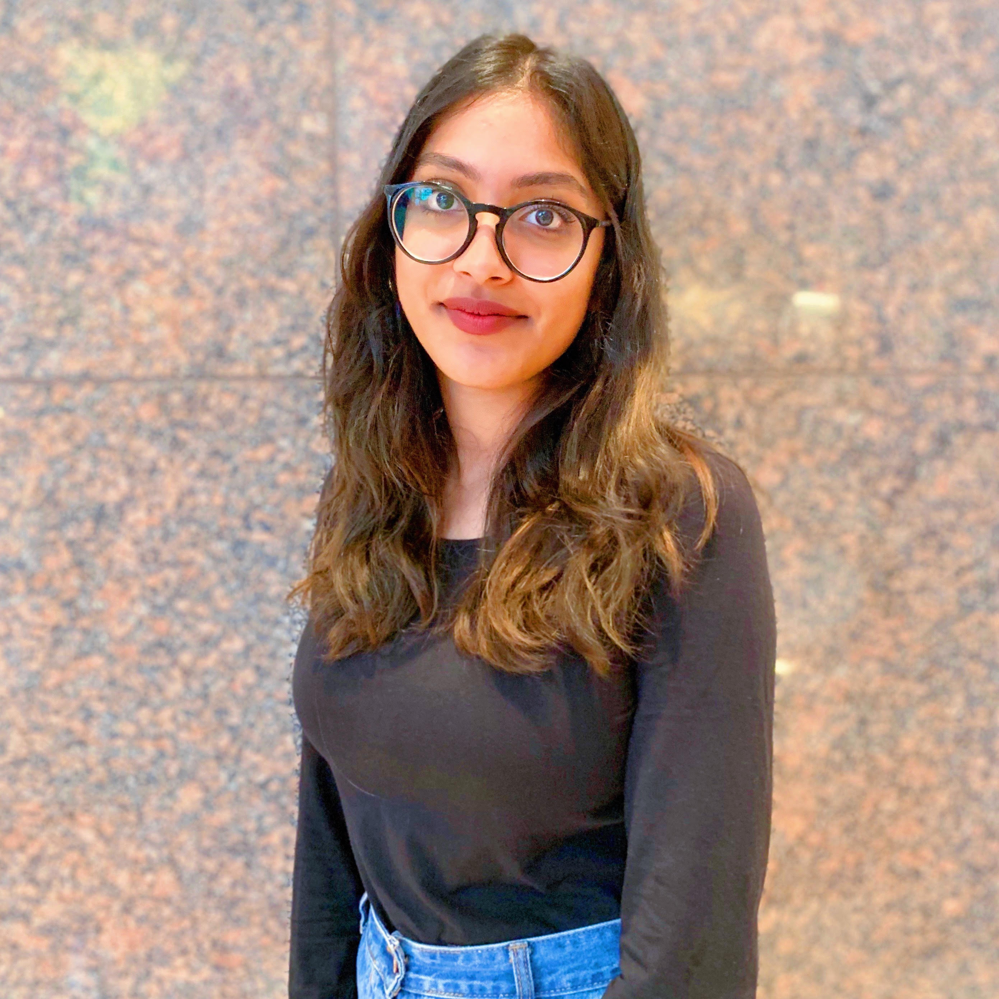
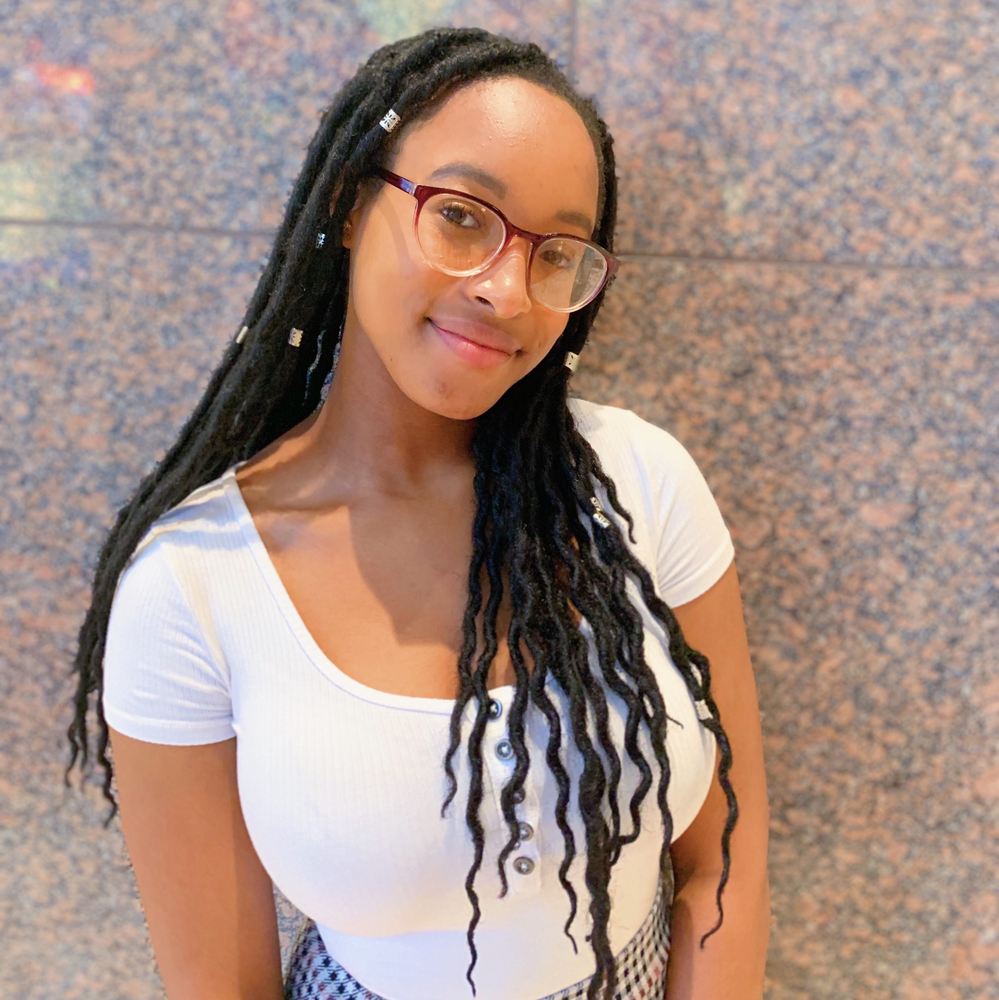

We are a tri-state based organization, and we want to aid other teens in finding opportunities in STEM during high school and aid in the college process. We realized that during our time in high school, opportunities concerning STEM were scarce, and in order to receive help for college applications, we needed to pay large sums of money to companies. By creating Uni(ED)Help, we hope to be able to help teens discover new interests and have free guidance through their time in high school.
OUR TEAM
Sarah Fida
Sarah, a senior at Leon M. Goldstein High School in Brooklyn, NY, has always been intrigued with the fields of computer science, aerospace engineering, biology, and chemistry. While tackling college-level STEM courses, she realized that these fields are largely male dominated. Passionate about defying the gender gap in technology, Sarah participated in the Girls Who Code SIP 2019, where she forged relationships with like-minded young women. Eager to learn about technological applications in a corporate setting, Goldman Sachs provided a unique environment to pitch ideas and complete projects in the languages of Python, HTML, CSS, Javascript, and C. Additionally, as Vice-president of the Senior Council, Neuroscience Club President, and school yearbook photographer, Sarah learns valuable leadership skills. As a part of the Science Olympiad team, she learned various building skills to compete in engineering events. Not forgetting her passion for the arts, Sarah is also the concertmaster of her community orchestra and knows 3 languages.
Camellia Guan
Camellia is a senior at Bergen County Academies in Hackensack, NJ. She harbors a great interest in topics within computer science, engineering, and chemistry. She has learned Java, Python, HTML/CSS, and assembly language. She was the co-president of her school's Girls Who Code club and participated in the Girls Who Code Summer Immersion Program at Goldman Sachs, where she learned C and Javascript. Camellia has partaken in cybersecurity competitions such as Girls Go Cyberstart, and she is interested in tackling the challenges that cybersecurity poses in society. Her interests are widespread, evidenced by her position as President of the Science Olympiad Team, competing at the state level several times. She will also be a Microbiology Team Intern at Reckitt Benckiser next semester. During her free time, Camellia can be found reading, listening to rock music, or constructing redstone contraptions in Minecraft. She is always looking to advance her understanding in programming and is passionate about battling the gender disparity in tech.

Shelly Masih
Shelly, a senior at New Utrecht High School in Brooklyn, NY, is interested in the fields of computer science, engineering, physics, and medicine. She has spent most of her junior year volunteering at a nursing home, where she learned valuable skills such as communicating efficiently, treating medical conditions, and the passion of helping others. During sophomore year, she participated in her school’s fashion show, which takes place every year in April. From October to March, Shelly worked on creating three pieces for the show, and participating in the show helped her feel more creative. Shelly currently participates in the Girls Who Code program at Goldman Sachs. Being in this program helped open her eyes and expand her interest in computer science and other career options she hadn’t thought of before. With Shelly’s constant changing mind, she is excited to learn more and find something she is really passionate about enough to pursue as a career.

Krystal McCook
Krystal, a senior at Choate Rosemary Hall in Wallingford, CT, finds herself intrigued by the STEM fields of biology, neuroscience, and computer science. She has delved herself into her studies of biology and cognitive neuroscience at her school by taking up extracurriculars and electives that align with her interest. To expand her knowledge of Computer Science, Krystal participated in the Girls Who Code Summer Immersion Program 2019, where she learned Python, HTML, CSS, JavaScript, and C. Before high school, Krystal participated in the rigorous program, Prep for Prep 9. Krystal enjoys engaging in many activities. She can be seen choreographing dances, mentoring students, educating her fellow peers on their health, working on her fashion publication, and acting in plays and musicals.. With her curious nature and love of learning, Krystal is excited to learn more about computer science and biology, with the hopes of advancing the current technology in medicine.
Julianna Yu
Julianna is a junior at Stuyvesant High School in New York, NY with an interest in mathematics and computer science. Wanting to expand her knowledge of technology and engineering, she participated in the 2019 Girls Who Code Summer Immersion Program at Goldman Sachs. Following her experience at this program, Julianna learned how to apply the coding languages of HTML, CSS, Javascript, and C to numerous humanitarian projects. The communication skills she learned while coding will always follow her. Outside of this summer program, she spends the majority of her time playing sports, building theater sets, doing mathematical problems, and programming. Having a very STEM-based background, she knows the importance of encouraging girls to go into the male-dominated fields of computer science and engineering. She hopes to continue pursuing computer science as a career choice and would like to keep being involved in advocating for more girls in the tech industry.